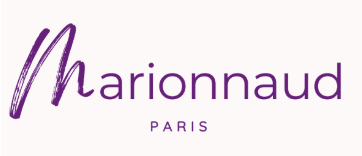

Stratégie Digitale Marionnaud
Recommandation / Branding

Le Brief
Réaliser une recommandation en communication numérique pour Marionnaud. Analyse des besoins utilisateurs et définition d'objectifs stratégiques adaptés.
Mon Rôle
Analyse stratégique, création de nouveaux logos et proposition de solutions numériques pour la marque.
Outils & Référentiels
Google Docs, Illustrator.
Compétences
Stratégie numérique, Branding, Analyse UX, Communication.